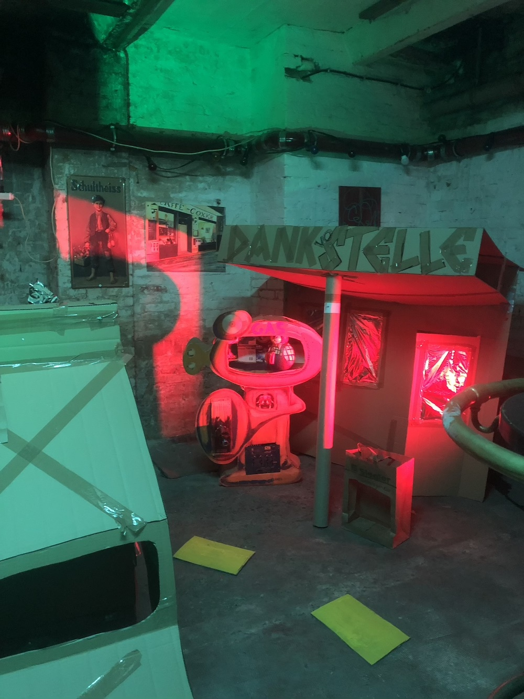
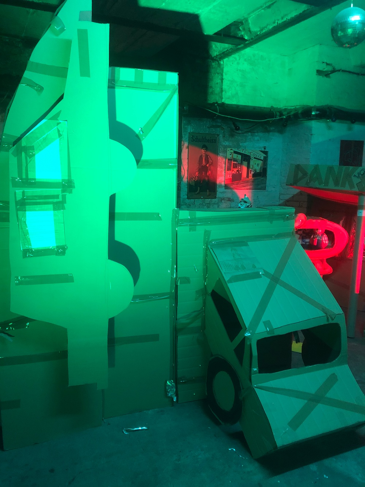
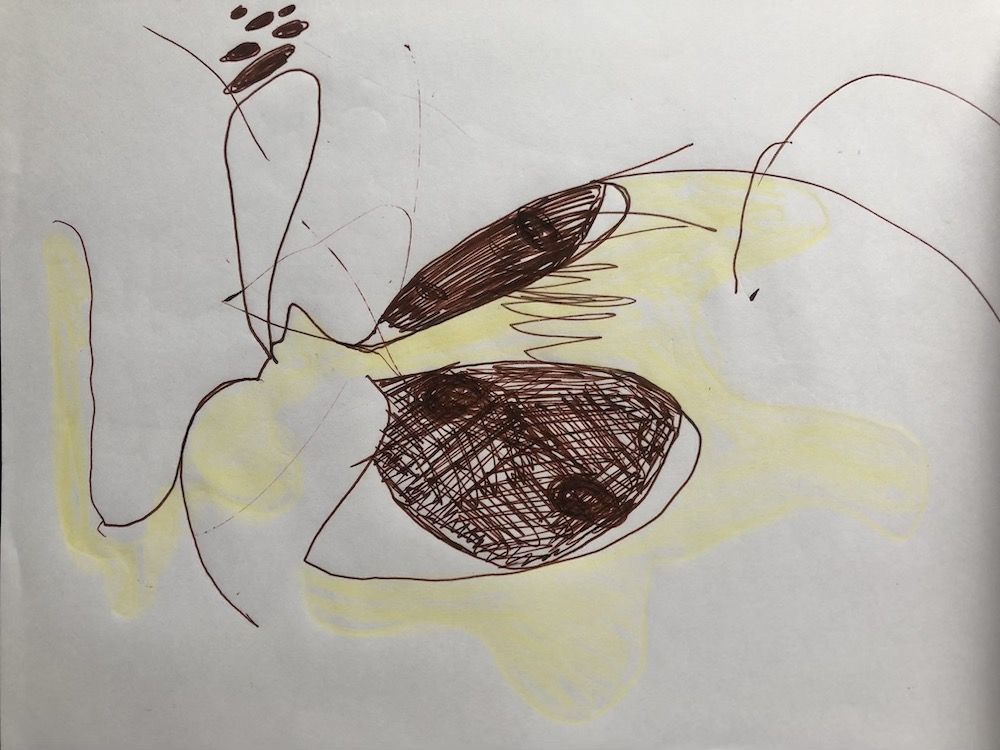
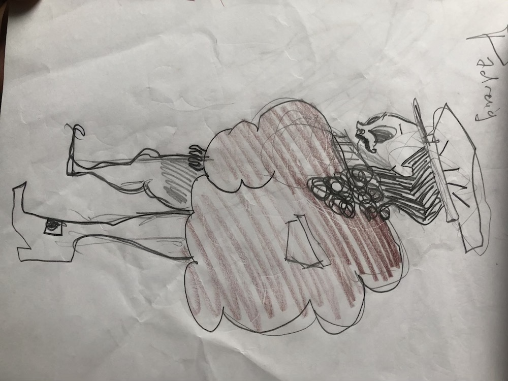

Prologue
Top of the mountain. Café Decentral. 00:00:00.
Scene 1
A setting obscured by indeterminate twilight and rolling fog. It is unclear whether it is morning, night, or some other time of day in a region closer to the poles of the globe. The fog is thick and mellow, rolling like smoke off the cherry of a cigar. Perhaps we are perilously close to the middle of a large forest fire? Around the periphery of the scene, the shadowy green conical tips of mid-sized evergreen trees occasionally cut into view through the fog. They are spaced far apart at fairly regular intervals, coming into view one at a time only to once again sink into the haze before the appearance of the next, gradually forming a neat crescent in the eye of the mind, a dark crown to hold onto in the shifting morass. There is still no clue as to what lies in the centre or the background. In the foreground, only what might be a bit of wet, dirty snow is visible. The fog rolls in from right to left. Whether the scene appears splendid and enchanting or sinister and cursed is difficult to say, perhaps a bit of human impertinence to ask in this setting of extreme remoteness. It is what it is. The wind is audible but not overly severe. One hears muted music in which rolling orchestral brass is prevalent over a driving bass line. After a couple of minutes, a heavy wooden door is slammed shut in its jamb of rough-hewn timber. Gradually, the fog thins and disperses, bringing new contents into the scene. The first thing to emerge is the glowing ember of a small cigar. Next comes the door just shut, a few wisps of smoke still escaping through the cracks. The door has a small window, weakly lit. The door is like a stylized version of something leading into an old time mineshaft, with a large hillock behind it built up with timber and packed with a mixture of earth and all kinds of detritus: children’s toys, shopping carts, the colourful spreads of magazines and newspaper flyers, bottles and cans, car tires, used electronics, etc. Next to become visible is the tall, burly figure behind the cigar, at first suspended in shadow. He is dressed to extreme excess, with no discernible rhyme or reason. One perhaps wonders how he has managed to fix such a vast array of clothing to his body. It can only be because of his size. He wears an unbuttoned double-breasted zoot suit of baize green to which have been added golden epaulettes and the patches of an outlaw motorcycle club, as well as buttons from Octoberfest and from various political campaigns. A falcon perches on his shoulder, repositioning a large fish in its beak in order to take it down whole. On his very large head he wears a very small black bowler hat, set off to the side and kept in place with a hatstring, with a rather large white ostrich feather tucked in the hatband. He wears reading glasses and exactly half of a finely waxed handlebar moustache as well as half of a long, pointed Van Dyke beard on the same side. He has no eyebrows. Otherwise his facial hair is just a bit scraggly and unkempt, that of a grown man left unshaven for about a week. His hair is done in the style where one side (from the temple back) is shaved and the rest allowed to grow long and straight and combed over to the side away from the shaved area. He wears a cape (which does not cover his broad shoulders but is slung back behind them) made of thick fur. The cape includes a parka hood fringed with the same fur. The hood must be big enough to encase his sizeable head. Over his large chest and stomach, he wears a black mesh shirt under a flimsy leather vest as well as a yellow cummerbund with a matching bowtie. On his legs he wears pink pleather crotchless chaps with iridescent red tassels glowing in a line from the hips down the outer seam of each leg. Underneath, he wears a loincloth, and overtop, a shabby skirt made of palm fibers that comes down around his knees. He wears a large pair of cowboy boots with great big spurs that light up when they spin. He has a clipboard tucked under his left arm, on which he wears a falconer’s glove. With the other hand, he smokes his little cigars. As the bouncer comes more and more into view, so does the rest of this little treelined opening. Around the middle (to the left of the bouncer, who stands to the left of the door) there are three large saguaro cacti. They have been festively adorned with strings of beer cans and cigarette packages. Condoms, boxer shorts, brassieres, small carcasses of birds, rodents, and fish, and teddy bears have been punctured and fixed on their sharp spines. Their trunks and each of their many arms has a little black bowler hat, the same as the bouncer’s, perched on top, big white feathers holding strong in the wind. What looks to be a small desert occupies this opening among the wintry pines that first punctuated the fog. The dusty windswept ground in the middle merges with the dirty wet snow circling it just within the fringe of pines, outside of which the ground is all whited over with snow before giving way at a sharp cliff edge. In the background appear snowy peaks broken only by steep, craggy rock faces, above the tree line. A man opens the door of the “mineshaft,” releasing a large puff of smoke. He wears a tasteful suit and tea shade sunglasses with thick frames. He is smoking a cigarette as he pokes his head out of the half-opened door, looking around with quick sweeps of the head before the smoke clears enough for him to spot the bouncer off to the side. Although the figures are obscured by the smoke pouring out of the door, it has lessened since the scene first opened.
Bouncer: When did you go off of the patch, Dino?
Dino: That was around 2009.
Bouncer: [embarrassed] Oh, right.
Dino: You have always been short on memory and long in everything else, haven’t you, Ricky?
Ricky: Uhh, well, at least since my accident.
Dino: Right, of course. I didn’t mean . . . Well, it’s really nothing. We are what we are. Or, what we become. Anyway, keep an eye out and be ready. There should be a few more coming up very soon with their final loads. And then that should be it for the day.
Ricky: Alright. And then I’m on stage?
Dino: And then you’re on stage. But first, be sure to mind what the next set brings. Don’t admit anything we can’t use. The stage is all done, so no more lumber. And, for fuck’s sake, no more cactuses. There isn’t any more space for them. Plus, we’re running out of hats.
Ricky: Already? But, just last week . . .
Dino: Last week some drunk idiots sent a whole case flying off the side of the mountain for sport.
Ricky: Oooh, yeah . . . [a bit shocked] and then I . . .
Dino: Exactly. Don’t worry about it. Serves them right.
Ricky: Of course. Just, for a second, I could hear their screams again, see their lives flashing in their beady little eyes as they flew down, swallowed up by the ash . . .
Dino: Don’t think any more about it. I have to get back inside. You know, we’re currently entertaining some very distinguished guests. By the way, Richard . . .
Ricky: Uh-huh?
Dino: You look great tonight.
Ricky: Thanks!
Dino disappears back inside, releasing another stream of smoke.
Ricky: [low, awkward singing in a strange mix of operatic baritone with the style and rhythm of a Drum&Bass hype man/emcee]
Top of the mountain where there’s
Not a helicopter or a train
Air is thin but who’s counting
The atoms. Friends,
The mountain balds below your chins
I hope you’ve got something on them
As we’re on it
A new world coming up into the clear
Bring it up bring it up
A contingency plan
Is not enough to cut cut cut it . . .
Suddenly, Ricky notices a gloved hand feeling its way up over the edge of the stage/cliff. He stops singing and walks over to it, putting his cigar in the beak of the falcon. The falcon then flies up and beats its wings in the air around the cacti while the scene continues.
Ricky: Hey, top of the mountain, there. Welcome to Café Decentral! Let me give you a hand . . . [he grabs the hand and starts pulling.]
Climber 1: Hold on a second you goddamn hipster spaz! My pack is stuck in the rocks.
Ricky: [letting go] Oh, I’m so sorry.
Ricky reaches down and helps with the pack, releasing it and pulling it up with one arm. It bulges and is obviously very heavy, slumping over with a metallic grating and clinking as Ricky lays it on the ground. Ricky then goes to help climber 1 over the cliff edge. Climber 1 wears typical climbing gear, but has loosened it off a bit: a beaver fur hat with ski goggles, pulled back over the forehead, a thick unbuttoned parka, boots, etc. Climber 1 is thoroughly exhausted, woozy and maybe a little euphoric after the climb. He lies in the snow and reaches for a cigarette as Ricky begins pouring alpine liqueur into his open mouth.
Ricky: Take it easy there, Herc.
Climber 1: [lighting a cigarette] A bit late for that. I've never really listened to good sense.
Ricky: Apparently. Anyway, that ought to do it then, eh?
Climber 1: As long as you assholes haven’t forgotten how to count.
Ricky: Wow, take it easy, Herc. I record everything precisely on my clipboard here. I don’t trust anything to memory.

Climber 1: Ah, shit. Of course, I know. Honest, reliable, hardworking Richard Bouncerson, son of a son of a son of a son of a son of a son of a . . . [laughs] bouncer. You’ve changed since I last saw you, though. You used to be small and dress like it was your mother who taught you how.
Ricky: A bouncer must always be a man of his time, for his time.
Climber 1: Man, your mother. Sang like a . . . like a dolphin in a . . . in a massage parlour.
Ricky: That’s a funny way to talk.
Climber 1: That’s what you come here for, isn’t it?
Ricky: To talk about my mother?
Climber: Oh, I’ll shut up now. Just let me sleep here for a bit. [He nods off.]
There is a sudden commotion heard coming from inside. Ricky rushes in—releasing more smoke out of the door—just as another hand is seen reaching up over the cliff edge, cigarette pinched between index and middle fingers. Climber 2 pulls himself up over the edge, still with great difficulty but more easily and effectively than climber 1. His pack is smaller but still quite bulging and heavy. He pulls it off and rests it in the dirt, away from the cliff edge. He is dressed similarly to climber 1, but tightly bundled up.
Climber 2: It smells a bit off here, doesn’t it, Bart? [He sees that climber 2 is sleeping in the snow.]
Light floods the scene as the door suddenly swings open with a bang. The bouncer has rammed it open with the helmeted head of a man wearing skis which get trapped between the jambs as he is forced out. The bouncer continues heedlessly pushing the man through until the skis crack into pieces. All the while, the man mutters drunken, semi-coherent pot-shots about the bouncer and his profession. When they are out the door and at the cliff edge, the bouncer rips off the skier’s helmet and replaces it with a snorkeling mask. Then he detaches the sharp broken end still dangling from one of the skis and stabs him with it before throwing him over the edge.
Ricky: Good fuckin’ luck with those moguls, bitch!
Meanwhile, Dino has appeared in the lit doorway holding the clipboard formerly held by the bouncer, who now approaches to retrieve it.
Dino: The same old story: you catch up with the thing just in time to fall right back down with it again. The top is nothing but a moment already vanishing before it comes into the offing.
Ricky: Should I strike his name off the list, Dino?
Dino: No, he might be good for another couple hundred kilos. If he’s as stubborn as the rest, he’ll be back.
Climber 2: [smoking, now overcome by fear all but overridden by exhaustion] But . . . didn’t you just kill him with . . . with the ski?
Boss: [with reassuring calm and composure] Nobody has killed anybody. We wouldn’t want to tempt the cops up her just as we’re putting the finishing touches on the place. Richard here is a total expert. He knows where to stab and where not to, haha.
Climber 2: [after a brief pause] Yeah, it sure smells like it’s finished.
Dino: Oh, don’t worry about that. And don’t talk about it anymore either. It’s just a weather anomaly. Very soon, we’ll have the technical means of addressing it, but for now you can count on it going away within a day or so. Gentlemen, please excuse me. If I recall correctly, last time we saw each other you were very close to reaching your quota. So, top of the mountain gentlemen. Welcome to Café Decentral! [He strides calmly back inside.]
Meanwhile, a third climber has been making his way over the cliff edge with quite a bit more ease than the first two. He hauls a very large pack, larger than those carried by either of the first two, but it does not appear nearly as heavy. His outfit is more casual and sportier compared to the others, including jeans, an unzipped bomber jacket exposing a business-casual collared shirt, a sweater tied around his waist, a headband, and sunglasses. He is spry and limber, throwing off his pack and spreading his arms with a big grin on his face, as if his arrival were some sort of surprise. He is just finishing a cigarette when he gets to the top, holding in the corner of his mouth, inhaling it almost as he breaths, sending billowing puffs of smoke to be carried off by the wind. He flicks it away and pulls out three more, lighting and smoking them all at once.
Climber 3: [extending his hand to Ricky, who still wears the falconer’s glove] Ricky, what the fuck’s up, man. You finally going to let us into this shithole?
Ricky: Italo, you’re back. You ought to smoke cigars, man. Listen, I told you last time you had a free pass with me.
Climber 3: Yeah, well, don’t give yourself too much credit, offering only what you know I won’t take. When you look after me, you have to look after my friends, too. I’d have to be some asshole leaving them in the lurch. But you fascists can’t budge a little from your rules . . . [laughing] thankfully. It’s why we’re all here: the principle. Everyone pulls their own weight. Once that’s over, I’ll be stabbing myself right back down to the bottom of this cliff, like you with that ski bimbo just now.
Ricky: Nonsense. You know how we stand here. Unflappably!
Climber 3: Where did you learn such a word?
Ricky: I knew many words before my accident. They return to me now and then . . . when I’m on stage . . .
Climber 2: Who was that you threw down just now anyway?
Ricky: That was just some nobody who got drunk and decided to dance around with his skis on inside, scratching up the new floor, interrupting the music. A real asshole.
Climber 3: Well, what else is new? Getting any love up here these days?
Ricky: I’ve never really been in love. I have always just been a bouncer.
Climber 3: Ahh, and I thought you loved me. We had some pretty sweet times back in high school, long car chases at sunset and daquiris on the beach, didn’t we? Oh well, what I meant was are you seeing any action, Ricardo.
Ricky: Oh, you know how it goes up here. All that happens pretty naturally. Of course. Naturally.
Climber 2: Is that the quartet I hear playing in there?
Ricky: No, no. We haven’t heard from them in a while. This is a DJ who just got here from . . . Korea, I think. Listen! Hmm, the bass sounds a little weak. A bit of classical sensibility there, as you can hear. But very current. She moves backward and forward in time. A rarity these days, no?
Climber 2: Yeah, sure. Right on.
Climber 1: [getting up from his nap, yawning] Cool!
Ricky: Well, let’s get you guys weighed up. Once I make sure the quotas are right, we’ll get you inside for some cigars and hot sakes. The fire is going. Somebody even killed a goat yesterday. We’re eating like a bunch of ancient Greeks up here today.
One by one, the climbers lug their packs over to Ricky, who weighs them on a scale that had been leaning against one of the cactuses.
Ricky: What did you bring up this time, Bart?
Climber 1: To get to two thousand I needed a little extra weight this time, so I brought some tiles, bricks, a bit of piping, a couple glass blocks. I hope they didn’t crack when you threw my pack down.
Ricky: Okay, excellent. We’ll be able to finish the sauna now and we’ve been having some issues with the plumbing, so that’s perfect. [He takes the weight of the pack and marks it on his clipboard.] What about you, Sven?
Climber 2: Sven Haus is the name. I brought some turntables and a couple PA speakers.
Ricky: Nice! The sound system needs an upgrade. [Measures the weight, marks it on his clipboard.] And Italo, I’m sure you won’t disappoint.
Climber 3: My cousin hooked me up with a bunch of really nice hats. Derbies, of course, feathers included. And on top of that, a fresh load of Cohibas . . .
Ricky: Ahh, there are some things we can always use more of. Especially now. Well, gentlemen, welcome back to the top of the mountain. Once you’re inside, Pearl . . . that’ short for Purlicue . . . just arrived today as well . . . she’ll show you around, get you all settled and introduced.
Climber 2: [as the three climbers walk through the door] Ahh. Down there it’s a real dramafest. Up here, the wind and fog take over that role. Benevolently. The so-called human personality is reduced to a mere caricature.
Climber 1: Mere . . . but maybe up here, as I hear some architect or other likes to say, mere is more . . .
Climber 3: Well, when it comes to flirting with chaos . . . [the voices trail off as the door shuts]
The three climbers go in. Ricky stays behind, inspecting the figures recorded on his clipboard. After a minute or so, Dino comes out.
Dino: Alright, Richard. We’re ready to wrap things up out here for today. How about you just read out that list once and then you’re ready to go.
Ricky: Okay, no problem, Dino.
Dino: [after a pause] Ready?
Ricky: Yeah, sorry, I was just thinking about how I should read. Okay, here goes [read off in the same strange mixture of operatic singing and D&B style emceeing]:
Italo Lövborg
Hans Decks
Jochen Waxmann
Sven Haus
Tramps McCabe
Thelma Klubmann
Cindy Mulleimer
Harry Bilgewater
Blake Bilgewater
Clarice Peymann
Richard “Ricky” Bouncerson
Falcon
David Eiermann
Dino Dino Velasquez
Frank Lloyd Wright
Frederick Law Olmsted
Martin Heidegger III
Giovanni Cabato
Ritalin
Footjob
Skiboot
Fenton Hackfleisch
Pils Hackfleisch
Mary-Lou Riel
Tulips Brokov Klostermann
Cadmus “CD” Snus
“Pearl” Purlicue de Bois
Fidget Salmonowski
Salmo Salmonowski
Bartholomew “Bart” Fitzgibbons
Patrick le Fleur
Lotus le Fleur Zedong
Tranx Carafe
Lars Patrick Peterson
Zamboni Neuköln
His gang of SAMOs
All of them paid up, but their identities yet to be determined.
Dino: That’s as it should be. In principle, we are absolutely against pigeonholing up here.
Ricky: In principle?
Dino: It means, we do the best we can with it.
The falcon finally flies back down and lands on Ricky’s glove as they go inside.
Curtain
Scene 2
Once again, the scene opens obscured by a dense, grey-tinged-with-yellow, shifting mass of air thinning out only slightly around the edges, revealing a few suggestively shaped patches of colour or shadow: an arm, a leg, the arched figure of a cat, perhaps a couple pieces of furniture. However, there is something else different here. The air moves, but only in a stagnant clockwise-circling mass. The variations of the palette—through various hues and shades of grey to brown and yellow—are not smooth and do not seem to emerge in depth. The whole is rather flat in effect, and, in fact, the shifting mass composed of rigid, oddly rectangular patches appears to consist of a series of still frames following one after the other at fixed intervals. The sense of movement is like what is really only a rather cheap movement-effect. As much as possible—e.g. through the use of a mesh grid fixed on a pane of glass (one will have to experiment here)—the scene gives the impression of a pixelated computer image, such as one sees in low quality video streams. But it is not quite the same. The means used should have their own particular touch, “shitty” but new and different. The movements of the figures should also be stylized to reflect this kind of technologically generated aesthetic, although the sound, at least, travels through space in the traditional manner. Through the smoke, the embers of cigarettes and cigars can be seen flaring up like a bunch of lights intermittently flashing in the dark, but still in keeping with the flattened effect. The music, however, emanates from a deep corner of the scene, almost as if we were here seated at a bar in the lobby outside of the concert hall where the music is playing. Although it sounds muted overall, certain elements stand out, relatively more distinct: brass again (whether e.g. saxophone or trumpet), as well as the rattle of a snare drum. Somebody is singing, but this sound is rather muted. Richard Bouncerson has not yet fully loosened up. The glimmering shadow of a figure assesses the situation more bluntly: “Terrible when the hype man still hasn’t managed to hype himself up.”
Curtain
Scene 3
The same as in Scene 2, except the music is now louder and more distinct. Additionally, the orange light permeating the smoky haze from the embers of the cigarettes and cigars does not come from a fixed place, as though from buildings or windmills in the distance, but rather bobs up and down to the music, rising and sinking like a luminous mass of fireflies hovering in the dark.
Ricky: [reading from a wrinkled sheet of paper, although this so far remains unseen]
Human beings go all in
Even though they can’t win
Losing everything
And still come out with at least enough
To bluff everyone and their mothers
They could call us all Erwin
Cause we’ll never win
Not excess or existence
Or anything at all
Till one fine day you’re in hospital
Diagnosed as having a seizure
But you’d hazard all along
You were an enfant terrible
Maybe not a master but
At least a builder in the
Bastard world.
After the music has begun to fade, Ricky the hype man announces into the microphone
Ricky: Ladies and gentlemen, now here to tell us about the meaning of Being—that’s being with a capital B—it’s Martin Heidegger III!
Suddenly a brick wall in the background is heard crumbling to the ground, the smoke funneling out and bringing into view glimpses of a large mountain under a bright blue sky. The smoke continues to clear out of the room, beginning in the area of the stage behind which the wall was situated. A young Korean girl can be seen working some turntables, with Ricky beside her on the microphone (she appears even smaller beside his very large figure). She begins to play some kind of grandiose operatic prologue (Das Rheingold?), only loud enough to make effective background noise for the following event. The smoke is still pouring out of the fallen wall, gradually clearing out from the area in the foreground where the cigar embers are still burning away. But already before that, a mogul run on a large ski hill appears through the opening in the back. Making his way down from the top, we see Martin Heidegger III, an extra arm poking forward and up from his right shoulder in a Nazi salute jerked around each way as he bumps expertly from mogul to mogul. After he reaches the bottom and comes to a quick stop, sending a big spray of snow into the audience, he says quite simply:
Martin Heidegger III: Provenance.
A quick lowering of the curtain—only long enough to remove the technical device used to create a pixelated effect should this device prove disruptive or merely ineffective when the scene changes to relatively normal light and sound, more and more cleared of smoke.
Scene 4
Martin Heidegger III now takes off his skis and walks from the stage (at the back centre-right) up to the bar (occupying the entire far-left section of the scene), lighting up a cigar as he does so. It turns out that the room of the chalet-bar is not much bigger than, for example, the “End of the Line Café” in the film version of The Iceman Cometh. Meanwhile, the room becomes more and more clear of smoke. The music has continued on stage in a seamless transition from the operatic prelude to a techno sampling of the same. Ricky has stopped singing for the moment but remains standing with the DJ, dancing to the music. By the time Heidegger orders an absinthe at the bar, a number of figures congratulating him on his “happening” (using various different English translations of “Erieignis”), one sees that all the figures in the bar are drinking this same luminous green beverage. Much of the light in the bar actually emanates from the embers and the absinthe. Bart is already at work reconstructing the brick wall in the background behind Ricky and the DJ, but he does so quite casually while smoking, drinking, and dancing. He wears a yellow construction helmet, a construction belt, and work boots, as well as a tight-fitting suit jacket on his torso, but with no pants. Except where otherwise noted, the crowd in the bar is dressed in elegant evening attire, except that, on the one hand, each of them is missing something—a sleeve, a pant leg, the midriff section of a top, a bottom, etc.—while, on the other, each wears some unique, off-colour article—a pink fedora, a red sweatband, a yellow cowboy hat, a purple beard, blue sunglasses, green ski goggles, etc. One figure is visible only as a hovering set of powder pink lingerie. Her smoke-grey evening gown is draped over the back of her stool at the bar, on which her besotted head rests. Ricky’s falcon occasionally jets through the airspace near the ceiling of thick wooden beams, leaving it unclear whether or where it lands, letting out a loud squawk each time. As the smoke clears more and more—never disappearing entirely, of course, for everyone in the place continues to smoke as Bart slowly rebuilds the wall—the figures of those present become visible. Some entertain light conversation with the bartender or with those sitting next to them at the bar. Others stand around casually chatting or dancing. One of them sits on a stool passed out with her head on the bar, the ash from her comically large cigar falling under its own mounting weight to reveal the still-blazing ember. Dino and Pearl are mixing around, making introductions. The last figures to appear from the haze are certain nondescript gray “marionettes” without strings. A couple of them stand still with their necks craned back to face skyward, another with its neck bent down and what would usually be its face turned to the floor; a couple others dance with what seems like wild abandon, but in perfectly repetitive movements, despite the relatively low volume of the music and with a faster tempo; two others make motions which could be flying or falling while their bodies are suspended in midair. The identical gray “marionettes” don’t smoke and they don’t wear any accessories. Occasionally, one of those standing in place will suddenly walk a few quick steps forward or back, its head still turned to face the floor or ceiling; or one of those suspended in midair will fly up out of the scene, returning down through the ceiling into another area, suspended in midair in the same situation of flying-falling. Otherwise, the marionettes don’t mix or mingle like the rest. Finally, perhaps the décor can be done in such a way that achieves a kind of pixelated effect on its own. The interior is a mix between an old bar, a Nordic spa, and a ski chalet. Deer antlers and the stuffed heads of a few animals adorn the walls (although not excessively), which in some places are made of brick and in others done over with tiles. The bar area is made of wood, like a saloon from the time of the Yukon goldrush in Dawson City. There is a dancefloor which is raised up a step and composed of coloured squares which light up, but otherwise the floor is made of tiles which slope down to drains which collect water runoff. There are plastic Adirondack chairs along the right side, around a cedar door leading into a sauna. In the back-right corner, there is a raised wooden cold tub with a small deck encircling it, also made of wood. In the near-right corner there is a stack of firewood. Near the centre there is a fireplace open at all sides under a ventilator hood around which a number of figures sit in Adirondack chairs, warming themselves, chatting casually, smoking, drinking absinthe. They wear bathrobes, again with various different areas missing—the section below the waist, an arm, a patch around the breasts or crotch, the entire left or right side (perhaps one split between two characters—“his and hers”). Their “distinguishing accessories” are banya hats of various shapes, sizes, and colours. There is a whole goat roasting on a spit over the low-burning flame of the firepit. There is also a bearskin on the floor around the firepit, with two of the uniformly sexless gray marionettes engaged in the perfectly repetitive movements of an overly rigidified sexual act, although their bodies don’t quite seem to touch. Close to the near end of the bar at the left, Martin Heidegger III stands drinking his absinthe behind the woman with a comically large cigar, passed out on the bar in powder pink lingerie. A couple of meters away, far at the far edge of the scene, closest to the audience, Hans Decks, Thelma Klubmann, Ritalin, and Tranx Carafe are seated at a table. Their conversation is audible over the frothy hubbub of the rest. It appears that Heidegger is listening in as he smiles good-naturedly in response to certain remarks, and it also appears that they suspect he will be listening in.
Ritalin: [ironically] Can we get some etymology on that, Mr. Doctor Professor? [They all laugh mildly.]
Hans: Haha, you have to start smackdab in the middle—by dissecting some pixelated wordshit we’ve given birth to and swallowed up and shit out over and over for a thousand generations.
Tranx: [a stylized, somewhat awkward mixture of playful irony and abstract seriousness—beginning by speaking as though she were relaying a message received telepathically, index finger touched to her temple] A little history lesson. Beep-boop. To remember. [Clears her throat] From an ancient Greek preposition, meaning “among, between, with,” or “after, behind, beyond,” or “over and above, besides, at the same time,” or “according to, in pursuit of.” [Heidegger startles a bit. Tranx notices his subtle movement out of the corner of her eye and continues, perhaps intending to gently tease him.] Well, that’s the gist of it, anyways. But the important question—the question “beyond” the Greek necropolis, we could say—is, what’ll we do with this information, friends?
Thelma: “What is to be done?” That’s from another era of questioning, the communist era, no?
Tranx: I didn’t mean that question at all, that generalized pseudo-philosophical quasi-Marxist moralizing bastardization, “What is to be done?” I mean exactly what I say: “What’ll we do with the information?” Sorry . . . I mean, questions need upgrading, just like technology. The more technological upgrades, the more upgrades we need in our questions.
Ritalin: “Friends.”
Tranx: Yes, “friends.”
[Heidegger smiles, touched.]
Ritalin: Friends interested in upgrading. Well, the idea coming here—our idea—our edge—was that we would . . . or so we said . . . “catalyze the interests of movement and change in the regions of perennial themes.”
Hans: Yeah okay, of course, but we can’t just keep repeating the same old shit over and over again. For example, we’ve all ended up here from out different starting points. Others with roughly the same starting points as all of us ended up in different places. Of course, they were never exactly the same, since two things can’t both be in the same place at the same time, eh, there, professor? So, we could start there. But that’s only part of it. For we’re also talking about the hurtles we’ve overcome—
Ritalin: All the mountain passes—we were there trying to get here, and now we’re over it: we’re here . . . we’ve been through it and now we know . . .
Tranx: Well, that’s no pleasure or solace in and of itself, and no help to others either . . . the true hour of need is like the hour of death—there’s no getting over it—you just have to be there. Let’s not forget about what we’re “in the midst of” right now . . .
Ritalin: You mean, like, how despite being different things coming from different directions we are now roughly in the same place?
Thelma: So it appears. Except when sometimes one of us gets so drunk you’d think they were speaking to you from some other mountaintop, below the tree line.
Ritalin: Or, like the gang of SAMOs that seems to keep growing around that Zamboni Neuköln. They’re unreachable. But would these exceptions actually show us anything if we looked furth—
Hans: That insufferable gang.
Ritalin: They’re a good time if you ask me. A bit dense, maybe, but fun.
Tranx: As long as there aren’t too many of them packed in here at once . . . But let’s rewind. We were talking about how we are all both here and there at the same time, or something like that. “Meta-” something . . . right?
[Heidegger can barely control his simpering. He tries to maintain his composure by lightly humming and rocking back and forth to the music.]
Hans: Close enough. As long as we remain consistent.
Tranx: Well, I’m thinking that all of this has something to do with void. You know?
Thelma: Here’s the secret of void and consistency, both. Cheers! [She raises her glass. They clink glasses, drink their absinthes, then think for a minute without anyone talking, making only the odd throat noise while shifting restlessly in their seats. Meanwhile, Heidegger orders another drink from the bartender, signaling to him to fill the glass to the top. It appears that he is now drinking in order to contain himself.]
Ritalin: [uncertain of herself] What kind of void do you mean?
Tranx: What?
Ritalin: I mean, like, for example, my family is supposed to have come from the coureur de bois in Canada, these European traders who knew the land and acted as the link between the natives and the colonial merchants. But I don’t know what the hell they came from. Probably some outcast debtors or runaway criminals or something. On top of which I don’t know who my dad was, just like he didn’t know who his dad was, except that he came from the coureur de bois—and so on. So, there’s one kind of void . . . And then, another example, there are all these mountains around us, waiting to be remade like so many new condo towers waiting to be filled with life.
Thelma: The void of the possible! Of what we might be.
Hans: Versus the void of the faded and disappearing—what we kind of are but can’t ever really even know.
Thelma: The fulsome void . . .
Hans: And the exhausted void, the void of the uncertain . . . the possibly irrelevant.
Ritalin: That sounds pretty cynical.
Hans: [affectedly deadpan] Yes. I am well-trained in the cynical manner of thinking. I’m not scared of changing directions.
Ritalin: Well, hmm . . . haha . . . if it ever comes to that . . .
Tranx: On the subject of changing directions, it has occurred to me that what we’re trying to make with this nth nature is a world in which there’s hope for artificial intelligence to really thrive and become something new and different, after all the past failures . . . contextual failures . . . the inevitable glitch of the early . . .
[Another short wordless period with restless humming, fidgeting, and throat noises. Heidegger suddenly appears quite drunk, swaying on his feet as he drains his absinthe, struggling to hold on to the ski still in his left hand. In what follows, Thelma begins speaking softly and slowly, the rest gradually picking up forcefulness and pace from there.]
Thelma: . . . something from nothing . . .
Hans: . . . two things from one thing.
Ritalin: One thing from two things.
Tranx: One thing from everything!
Hans: Two things in the same place at once!!
Thelma: One thing in two places at once!!
Ritalin: Nothing from everything!!!
Tranx: [after a short pause, more calmly again, as Thelma began] Might as well round it off: Everything from one thing. God . . . [They laugh]
[Heidegger has started repetitiously mumbling disjointed words and syllables in his drunken stupor: first “no, no, no,” then “some, some, some,” then “twotwotwo one,” then “thingthing thing thing no,” and finally “fro one one from frofrom one fro.” By the end of the last phrase, he stumbles back, his third arm smacking the back of Ritalin’s head, and crashes into the table, sending a pile of glasses flying onto the floor. He still holds onto his skis, which miraculously didn’t hit anyone. Then, when all has come to rest and Heidegger is lying more or less wholly incapacitated on the floor, his third arm sticking up into the air, he continues to mumble audibly:]
[Heidegger: Romans . . . thoreally unsilophosical . . . Scheiße . . .
[Hans Decks, Thelma Klubmann, Ritalin, and Tranx Carafe have meanwhile gotten up from their seats, still holding onto their drinks, and now stand around a little awkwardly, although they don’t seem overly concerned. And then:]
Tranx: To the potent void from which flow the lives of plants fermenting. Cheers! [They all cheers and then empty their glasses around incapacitated Martin Heidegger III]
Tranx: [after a short pause] There is perhaps a kind of justice in it all.
Ritalin: Yeah . . . this . . . hmmm . . . “Pixel World.”
Thelma: “Pixelated Nightmare.” [Ricky approaches, responding to the commotion]
Ritalin: Yeah, the cynical edge could work here. With all those who know, who remember. [Richard rubs his neck in embarrassment]
Ritalin: Don’t worry Rick, there are many ways to know and remember. Your body has more capacity for it than most brains. [Ricky smiles at the moment of recognition]
Hans: But, for the perennial optimists, how about something lighter?
Tranx: “Naïveté à la Pixels.”
Thelma: Haha, that’s kind of cute. Sounds like something out of a fairytale or children’s story. [They cheers their empty glasses, draining whatever little drops remain]
Hans: Another round, please, bartender.
Curtain
Scene 5
The only characters who remain upright are the DJ and Ricky